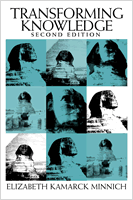

<body bgcolor="#FFFFFF" text="#000000" link="#0000FF" vlink="#CC0000" alink="#CC0000"><center><hr width="350" size="1" align="center" noshade>A new edition of a widely influential book engages with contemporary critiques of inequality and with recent global events<hr width="350" size="1" align="center" noshade><p><a href="https://cdcshoppingcart.uchicago.edu/Cart/ChicagoBook.aspx?ISBN=9781592131310&&PRESS=temple" target="_top">Buy this book!</a> | <a href="https://cdcshoppingcart.uchicago.edu/Cart/Cart.aspx?PRESS=temple" target="_top">View Cart</a> | <a href="https://cdcshoppingcart.uchicago.edu/Cart/Cart.aspx?PRESS=temple" target="_top">Check Out</a></p><p></p></center><!--none//--><h1>Transforming Knowledge</h1>
<H2>Second Edition</H2>
<h3>Elizabeth Kamarck Minnich</h3>
<P>cloth 1-59213-131-X $80.50, Dec 04, <FONT COLOR=#990033>Available</FONT>
<br>paper 1-59213-132-8 $31.95, Dec 04, <FONT COLOR=#990033>Available</FONT>
<br>Electronic Book 1-43990-476-6 $31.95 <FONT COLOR=#990033>Available</FONT>
<BR> 312 pp
6x9
</P><h3 align="center"><P><font color="#996633">Ninth Annual Frederic W. Ness Book Award, Association of American Colleges,
1990</font></P>
</H3>
<BLOCKQUOTE><I>"In </i>Transforming Knowledge, Second Edition<i>, Elizabeth Minnich dissects the fundamental errors underlying patriarchal thought systems and explains the resistances faced by those working towards an inclusive, truly democratic restructuring of knowledge. This welcome new edition offers the philosophical foundation for the urgent tasks of holistic thinking and a truly life- and earth-saving activism. A brilliant and indispensable book."</i>
<br>&#151<b>Gerda Lerner</b>, Robinson-Edwards Professor of History, Emerita, University of Wisconsin-Madison, and author, <i>Creation of Patriarchy</i>, <i>Creation of Feminist Consciousness</i>, and <i>Fireweed: A Political Autobiography</i><i></I></BLOCKQUOTE>
<p>This is a book about how we define knowledge and how we think about moral and political questions. It argues that the prevailing systems of knowledge, morality, and politics are rooted in views that are exclusionary and therefore legitimate injustice, patriarchy, and violence. That is, these views divide humans into different kinds along a hierarchy whose elite still defines the systems that shape our lives and misshape our thinking.
<p>Like the first edition of <i>Transforming Knowledge</i>, this substantially revised edition calls upon us to continue to liberate our minds and the systems we live within from concepts that rationalize inequality. It engages with the past fifteen years of feminist scholarship and developments in its allied fields (such as Cultural Studies, African American Studies, Queer Studies, and Disability Studies) to critique the deepest and most vicious of old prejudices. This new edition extends Minnich's arguments and connects them with the contemporary academy as well as recent instances of domination, genocide, and sexualized violence.
<p><ul><li><p>Updated to consider recent scholarship in Gender, Multicultural, Postcolonial, Disability, Native American, and Queer Studies, among other fields of study
<li><p>Revised to include an extended analysis of the conceptual errors that legitimate domination, including the construction of kinds ("genders") of human beings
<li><p>Revised to include new materials from a variety of cultures and times, and engages with today's contemporary debates about affirmative action, postmodernism, and religion</ul>
<BR>&nbsp;<h2>Excerpt</h2><P>Excerpt available at <a href="http://www.temple.edu/tempress">www.temple.edu/tempress</a></p>
<BR>&nbsp;<h2>Reviews</h2>
<p><i>"</i>Transforming Knowledge, Second Edition<i> enacts the urgent ethical project of demonstrating that informed, careful thinking and passionate politics are fundamental to envisioning a just, liberal education, and a democratic public university. Minnich challenges the reader in her gentle yet sharply critical arguments to examine the epistemic confusions and errors that underlie disciplinary knowledges, curricular strategies, and research paradigms. A brilliantly persuasive, deeply pedagogical book by one of the most insightful and compassionate feminist philosophers writing today."</i>
<br>&#151<b>Chandra Talpade Mohanty</b>, Professor of Women's Studies, Syracuse University, and author of <i>Feminism Without Borders: Decolonizing Theory, Practicing Solidarity</i>
<BR>&nbsp;<h2>Contents</h2><P>
<p><b>Introduction: Still Transforming Kowledge</b>
<br>I. Thinking: An Introductory Essay
<br><i>Thinking about women, or, "Women's work is never done" &#149 Thinking as philosophical fieldwork &#149 Thinking in the New Academy &#149 Some reframings of thinking from the New Academy: From The One to The Many, From nouns to verbs, From external (additive) to internal (transactional) relationalities, From divided to mutually formative theory and practice &#149 Questioning "Theory" &#149 Returning to the field</i>
<br>II. Still Transforming Knowledge: Circling Out, Pressing Deeper
<br><i>Classifying humans by kind &#149 Conceptual errors as psychotic conceptualizations &#149 Including nature &#149 Re-ordering historical time &#149 Rights, public/private&#151and privatization &#149 Religion</i>
<p>Preface and Acknowledgments
<br>A note on sources
<br>A note on usage: "We", "Black"/"white" and entwined racializations, Scare quotes
<br>Acknowledgments
<p><b>1. No One Beginning</b>
<br><i>Centering critique &#149 More personal beginnings &#149 Speaking as and for ourselves &#149 Why do curricula matter?</i>
<p><b>2. Contextual Approaches: Thinking About</b>
<br><i>Access to the curriculum: some background &#149 Contemporary movements: equality, recognition &#149 Early&#151and continuing&#151questions: Scholarship vs. politics?, The disciplines, "Lost women", "Add women and stir" &#149 Critique and reflexive thinking: Thinking with and without the tradition &#149 Public/private &#149 Philosophical cultural analysis; psychotic cultural systems</i>
<p><b>3. Conceptual Approaches: Thinking Through</b>
<br><I>Conceptual errors: the root problem, Dividing by 'kind' &#149 Some examples from the curriculum &#149 A traditional story &#149 Paideia &#149 </i>Novus ordo seclorum<i>: ideals and practices in the "New World"</i>
<p><b>4. Errors Basic to Dominant Traditions</b>
<br><i>Faulty generalization & hierarchically invidious monism &#149 Useful universals? Distinguishing thinking from knowing &#149 Articulating the hierarchy: Sex/gender, class, racializations &#149 "Reverse discrimination" &#149 Taking the few to represent all: 'Markers' of particularity, Invisibility, Circular reasoning &#149 Mystified concepts: Excellence, Judgment, Equality, Rationality, intelligence&#151and good papers, Liberal arts, Woman, Sex, Man, War, Gender &#149 Partial Knowledge: Impartial, objective knowledge; Unanimity; Emotions, animals, morality; Undoing partial public authority; Personal, subjective, located knowledges: relativism? &#149 Continuing resistance to transformation: Professionalization</i>
<p><b>5. Circling Back, Keeping Going</b>
<br><i>From errors to visions &#149 Reclaiming intimacy, universality, public life &#149 Thinking and acting</i>
</P><BR>&nbsp;<H2>About the Author(s)</H2>
<table><tr><td valign="top"><img src="/tempress/authors/688_au.gif" height="90" width="75"></td><td width="100%" valign="middle"><p><b>Elizabeth Kamarck Minnich</b> is Core Professor at the Graduate College for Interdisciplinary Arts and Sciences, The Union Institute and University. She has spoken and consulted on developing more inclusive curricula at colleges and universities in the U.S. and abroad. She has served as Chair of the North Carolina Humanities Council, on the Executive Committee of the Society for the Study of Women Philosophers, and the Committee on the Status of Women, both associated with The American Philosophical Association. In addition, she is the coeditor of <i>Reconstructing the Academy: Women's Education and Women's Studies</i>.</P></td></tr></table>
<BR><H2>Subject Categories</H2>
<p><A HREF="/tempress/women.html" TARGET="_top">Women's Studies</a>
<BR><A HREF="/tempress/education.html" TARGET="_top">Education</a>
<BR><A HREF="/tempress/philosophy.html" TARGET="_top">Philosophy and Ethics</a>
</p>
<p align="center"><a href="https://cdcshoppingcart.uchicago.edu/Cart/ChicagoBook.aspx?ISBN=9781592131310&&PRESS=temple" target="_top">Buy this book!</a> | <a href="https://cdcshoppingcart.uchicago.edu/Cart/Cart.aspx?PRESS=temple" target="_top">View Cart</a> | <a href="https://cdcshoppingcart.uchicago.edu/Cart/Cart.aspx?PRESS=temple" target="_top">Check Out</a></p><p><font face="Arial" size="1"><a href="copyright.html" onMouseOver="window.status='Web Copyright Policy';return true;" onMouseOut="window.status=''" title="Web Copyright Policy">&copy;</a> 2015 <a href="http://www.temple.edu" target="new" onMouseOver="window.status='Link to Temple University home page';return true;" onMouseOut="window.status=''" title="Link to Temple University home page">Temple University</a>. All Rights Reserved. http://www.temple.edu/tempress/titles/688b_reg.html</font></p>